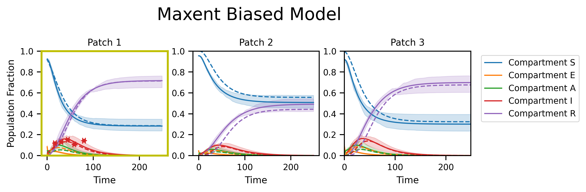
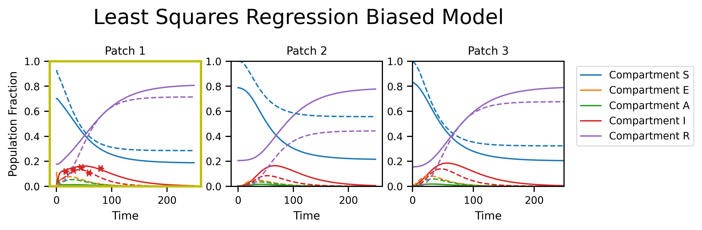

Epidemiology Example
Packages
# to speed-up execution, mark this as True
USE_CACHED_RESULTS = True
# cross-fold crashes Github CI
USE_CACHED_CV5_RESULTS = True
import os
os.environ["TF_CPP_MIN_LOG_LEVEL"] = "3"
import maxent
import maxentep as py0
import tensorflow as tf
tf.get_logger().setLevel("INFO")
import matplotlib.pyplot as plt
import numpy as np
import seaborn as sns
import pyabc
os.environ["CUDA_VISIBLE_DEVICES"] = "-1"
sns.set_context("paper")
from tqdm import tqdm
from functools import partialmethod
tqdm.__init__ = partialmethod(tqdm.__init__, disable=True)
Set-up SEAIR Model
# Make up some populations (take as known)
M = 3
np.random.seed(0)
population = np.maximum(
1000, np.round(np.random.normal(loc=100000, scale=25000, size=(M,)), 0)
)
area = np.maximum(250, np.round(np.random.normal(loc=2000, scale=1000, size=(M,)), 0))
print(area, population)
population_fraction = population / np.sum(population)
[4241. 3868. 1023.] [144101. 110004. 124468.]
# compartment parameters
compartments = ["E", "A", "I", "R"]
infections_compartments = [1, 2]
infect_fxn = py0.contact_infection_func(infections_compartments)
full_compartments = ["S"] + compartments
R = np.array([[1000, 400, 10], [0, 300, 300], [300, 300, 1000]])
R_norm = R / np.sum(R, axis=1)
def metapop_wraper(start_infected, start_asymptomatic, E_time, A_time, I_time):
beta = 0.025
start = np.zeros((3, 4))
start[0, 2] = start_infected
start[0, 1] = start_asymptomatic
tmat = py0.TransitionMatrix(compartments, infections_compartments)
tmat.add_transition("E", "A", E_time, 0)
tmat.add_transition("A", "I", A_time, 0)
tmat.add_transition("I", "R", I_time, 0)
timesteps = 250
meta_model = py0.MetaModel(infect_fxn, timesteps, populations=population_fraction)
trajectory = meta_model(R_norm, tmat.value, start, beta)[0]
return trajectory
ref_inpputs = [0.02, 0.05, 7, 5, 14]
ref_traj = metapop_wraper(*ref_inpputs)
# ref_traj = ref_traj[np.newaxis,...]
fig, axs = plt.subplots(nrows=1, ncols=M, figsize=(8, 2), dpi=300)
fig.suptitle("Reference Model", y=1.2, fontsize=18)
for i in range(M):
plt.setp(axs[i], xlabel="Time", title="Patch {}".format(i + 1), ylim=[0, 1])
axs[i].plot(ref_traj[:, i], linestyle="--", label=full_compartments)
axs[0].set_ylabel("Population Fraction")
plt.legend(bbox_to_anchor=(1, 1))
plt.show()
npoints = 5
np.random.seed(0)
prior = maxent.Laplace(0.01)
restrained_compartments = [3] # (infected patch)
restrained_compartments_names = [full_compartments[m] for m in restrained_compartments]
number_of_restrained_compartments = len(restrained_compartments)
restrained_patches = np.array([0])
print("Patches restrained:", restrained_patches)
print(
"Total number of restraints: ",
npoints * number_of_restrained_compartments * len(restrained_patches),
)
print("Compartments restrained: ", restrained_compartments_names)
restraints, plot_fxns_list = py0.compartment_restrainer(
restrained_patches,
restrained_compartments,
npoints,
ref_traj,
prior,
noise=0.05,
start_time=0,
end_time=100,
)
Patches restrained: [0]
Total number of restraints: 5
Compartments restrained: ['I']
Restraints are set on this time range: [0, 100]
59 0.11300826 0.10784731813725082
45 0.13207552 0.1526054434665933
31 0.12169183 0.12889400901430076
80 0.06942835 0.1421420223992924
17 0.08018874 0.11824062257689161
ref_traj.shape
TensorShape([250, 3, 5])
Sample SEAIR Trajectories
tf.random.set_seed(0)
if not USE_CACHED_RESULTS or not os.path.exists(
"epidemiology_files/maxent_sample_trajs"
):
tmat = py0.TransitionMatrix(compartments, infections_compartments)
tmat.add_transition("E", "A", 2, 1)
tmat.add_transition("A", "I", 2, 4)
tmat.add_transition("I", "R", 10, 5)
start_logits = np.zeros((M))
hyper_pram = py0.ParameterHypers()
hyper_pram.beta_var = 0.000001
hyper_pram.beta_start = 0.025
hyper_pram.beta_high = 0.025002
hyper_pram.beta_low = 0.025001
hyper_pram.start_mean = 0.001
hyper_pram.start_high = 0.4
hyper_pram.start_var = 0.8
hyper_pram.R_var = 0.00001
param_model = py0.MetaParameterJoint(
start_logits, R, tmat, name="unbiased model", hypers=hyper_pram
)
# Fxing beta and mobility matrix
R_norm_sample = tf.convert_to_tensor(R_norm)
beta_sample = tf.convert_to_tensor([0.025])
N = 2048
batches = 4
batch_size = N * batches
outs = []
timesteps = 250
model = py0.MetaModel(infect_fxn, timesteps, populations=population_fraction)
for b in tqdm(range(batches)):
psample = param_model.sample(N)
outs.append(model(*psample))
trajs = np.concatenate(outs, axis=0)
np.save("epidemiology_files/maxent_sample_trajs", trajs)
else:
trajs = np.load("epidemiology_files/maxent_sample_trajs.npy")
fig, axs = plt.subplots(nrows=1, ncols=M, figsize=(8, 2), dpi=300)
fig.suptitle("Unbiased Model", y=1.2, fontsize=18)
py0.traj_quantile(
trajs[:, :, 0, :],
names=full_compartments,
plot_means=True,
ax=axs[0],
add_legend=False,
alpha=0.2,
)
py0.traj_quantile(
trajs[:, :, 1, :],
names=full_compartments,
plot_means=True,
ax=axs[1],
add_legend=False,
alpha=0.2,
)
py0.traj_quantile(
trajs[:, :, 2, :], names=full_compartments, plot_means=True, ax=axs[2], alpha=0.2
)
for i in range(M):
plt.setp(axs[i], xlabel="Time", title="Patch {}".format(i + 1), ylim=[0, 1.0])
axs[i].plot(ref_traj[:, i], linestyle="--")
axs[0].set_ylabel("Population Fraction")
plt.show()
if not USE_CACHED_RESULTS:
me_model = maxent.MaxentModel(restraints)
me_model.compile(tf.keras.optimizers.Adam(learning_rate=1e-1), "mean_squared_error")
me_history = me_model.fit(trajs, batch_size=batch_size, epochs=1000, verbose=0)
me_w = me_model.traj_weights
np.save("epidemiology_files/maxent_biased_me_w", me_w)
else:
me_w = np.load("epidemiology_files/maxent_biased_me_w.npy")
fig, axs = plt.subplots(nrows=1, ncols=M, figsize=(8, 2), dpi=300)
fig.suptitle("Maxent Biased Model", y=1.2, fontsize=18)
py0.traj_quantile(
trajs[:, :, 0, :],
weights=me_w,
names=full_compartments,
plot_means=True,
ax=axs[0],
add_legend=False,
alpha=0.2,
)
py0.traj_quantile(
trajs[:, :, 1, :],
weights=me_w,
names=full_compartments,
plot_means=True,
ax=axs[1],
add_legend=False,
alpha=0.2,
)
py0.traj_quantile(
trajs[:, :, 2, :],
weights=me_w,
names=full_compartments,
plot_means=True,
ax=axs[2],
alpha=0.2,
)
for i in range(M):
plt.setp(axs[i], xlabel="Time", title="Patch {}".format(i + 1), ylim=[0, 1.0])
axs[i].plot(ref_traj[:, i], linestyle="--")
if i in restrained_patches:
for _, pf in enumerate(plot_fxns_list[restrained_patches.tolist().index(i)]):
pf(axs[i], 0, color="C3")
axs[i].spines["bottom"].set_color("y")
axs[i].spines["top"].set_color("y")
axs[i].spines["right"].set_color("y")
axs[i].spines["left"].set_color("y")
axs[i].spines["left"].set_linewidth(2)
axs[i].spines["top"].set_linewidth(2)
axs[i].spines["right"].set_linewidth(2)
axs[i].spines["bottom"].set_linewidth(2)
axs[0].set_ylabel("Population Fraction")
plt.show()

Least squares regression
if not USE_CACHED_RESULTS:
C = len(compartments)
start = np.zeros((M, C))
start[0, 1] = 0.001
start[0, 2] = 0.001
beta_start = 0.1
infect = py0.ContactInfectionLayer(beta_start, infections_compartments)
# make "agreement" function
def agreement(traj, rs=restraints):
s = 0
for r in rs:
s += r(traj[0]) ** 2
return s
rmodel = py0.TrainableMetaModel(
start, R_norm, tmat.value, infect, timesteps, agreement
)
rmodel.compile(optimizer=tf.keras.optimizers.Nadam(0.01))
utraj = rmodel.get_traj()
rmodel.fit(timesteps)
regressed_traj = rmodel.get_traj()
np.save("epidemiology_files/ls_biased_traj", regressed_traj)
else:
regressed_traj = np.load("epidemiology_files/ls_biased_traj.npy")
fig, axs = plt.subplots(nrows=1, ncols=M, figsize=(8, 2), dpi=300)
fig.suptitle("Least Squares Regression Biased Model", y=1.2, fontsize=18)
py0.traj_quantile(
regressed_traj[:, :, 0, :],
names=full_compartments,
plot_means=True,
ax=axs[0],
add_legend=False,
alpha=0.2,
)
py0.traj_quantile(
regressed_traj[:, :, 1, :],
names=full_compartments,
plot_means=True,
ax=axs[1],
add_legend=False,
alpha=0.2,
)
py0.traj_quantile(
regressed_traj[:, :, 2, :],
names=full_compartments,
plot_means=True,
ax=axs[2],
alpha=0.2,
)
for i in range(M):
plt.setp(axs[i], xlabel="Time", title="Patch {}".format(i + 1), ylim=[0, 1.0])
axs[i].plot(ref_traj[:, i], linestyle="--")
if i in restrained_patches:
for _, pf in enumerate(plot_fxns_list[restrained_patches.tolist().index(i)]):
pf(axs[i], 0, color="C3")
axs[i].spines["bottom"].set_color("y")
axs[i].spines["top"].set_color("y")
axs[i].spines["right"].set_color("y")
axs[i].spines["left"].set_color("y")
axs[i].spines["left"].set_linewidth(2)
axs[i].spines["top"].set_linewidth(2)
axs[i].spines["right"].set_linewidth(2)
axs[i].spines["bottom"].set_linewidth(2)
axs[0].set_ylabel("Population Fraction")
plt.show()

abc
np.random.seed(0)
start_infected = 0.001
start_asymptomatic = 0.001
E_time = 2
A_time = 2
I_time = 10
abc_param_keys = ["start_infected", "start_asymptomatic", "E_time", "A_time", "I_time"]
abc_param_values = [start_infected, start_asymptomatic, E_time, A_time, I_time]
abc_parameters = dict(zip(abc_param_keys, abc_param_values))
def abc_model(parameter):
trajectory = metapop_wraper(
float(parameter["start_infected"]),
float(parameter["start_asymptomatic"]),
+float(parameter["E_time"]),
float(parameter["A_time"]),
float(parameter["I_time"]),
)
restrainted_time_values = [59, 45, 31, 80, 17]
values = np.array([trajectory[m, 0, 3].numpy() for m in restrainted_time_values])
return {"data": values}
def distance(x, y):
d = np.sum(np.abs(x["data"] - y["data"]))
return d
if not USE_CACHED_RESULTS:
parameter_priors = pyabc.Distribution(
start_infected=pyabc.RV("truncnorm", 0, 0.5, abc_param_values[0], 0.8),
start_asymptomatic=pyabc.RV("truncnorm", 0, 0.5, abc_param_values[1], 0.8),
E_time=pyabc.RV("norm", abc_param_values[2], 1),
A_time=pyabc.RV("norm", abc_param_values[3], 4),
I_time=pyabc.RV("norm", abc_param_values[4], 5),
)
abc = pyabc.ABCSMC(abc_model, parameter_priors, distance)
db_path = "sqlite:///" + os.path.join(os.getcwd(), "abc_SEAIR.db")
observation = np.array([r.target for r in restraints])
abc.new(db_path, {"data": observation})
history = abc.run(minimum_epsilon=0.1, max_nr_populations=5)
df, w_abc = history.get_distribution(m=0, t=history.max_t)
abc_trajs = np.empty(
(len(df), ref_traj.shape[0], ref_traj.shape[1], ref_traj.shape[2])
)
for i, row in enumerate(tqdm(np.array(df))):
(
A_time_abc,
E_time_abc,
I_time_abc,
start_asymptomatic_abc,
start_infected_abc,
) = (row[0], row[1], row[2], row[3], row[4])
traj = metapop_wraper(
start_infected_abc,
start_asymptomatic_abc,
E_time_abc,
A_time_abc,
I_time_abc,
)
abc_trajs[i] = traj
abc_biased_traj = np.sum(
abc_trajs * w_abc[:, np.newaxis, np.newaxis, np.newaxis], axis=0
)
np.save("epidemiology_files/abc_biased_traj.npy", abc_biased_traj)
else:
abc_biased_traj = np.load("epidemiology_files/abc_biased_traj.npy")
5-fold cross validation
if not USE_CACHED_CV5_RESULTS:
LS_traj_folds = np.empty((npoints, trajs.shape[1], trajs.shape[2], trajs.shape[-1]))
MaxEnt_traj_folds = np.empty_like(LS_traj_folds)
abc_traj_folds = []
for i in range(npoints):
sampled_restraints = [n for n in restraints if n != restraints[i]]
## MaxEnt
print(f"Initializing LS for fold {i}")
def new_agreement(traj, rs=sampled_restraints):
s = 0
for r in rs:
s += r(traj[0]) ** 2
return s
rmodel_sampled = py0.TrainableMetaModel(
start, R_norm, tmat.value, infect, timesteps, new_agreement
)
rmodel_sampled.compile(optimizer=tf.keras.optimizers.Nadam(0.01))
utraj_sampled = rmodel_sampled.get_traj()
rmodel_sampled.fit(timesteps)
regressed_traj_sampled = rmodel_sampled.get_traj()
LS_traj_folds[i, :, :, :] = regressed_traj_sampled
## MaxEnt
print(f"Initializing MaxEnt for fold {i}")
me_model_sample = py0.MaxentModel(
sampled_restraints, trajs=trajs, population_fraction=population_fraction
)
me_model_sample.compile(
tf.keras.optimizers.Adam(learning_rate=1e-1), "mean_squared_error"
)
me_history_sample = me_model_sample.fit(
trajs, batch_size=batch_size, epochs=1000
)
MaxEnt_traj_folds[i, :, :, :] = np.sum(
me_model_sample.trajs
* me_model_sample.traj_weights[:, np.newaxis, np.newaxis, np.newaxis],
axis=0,
)
## ABC
print(f"Initializing ABC for fold {i}")
def abc_model(parameter):
trajectory = metapop_wraper(
float(parameter["start_infected"]),
float(parameter["start_asymptomatic"]),
+float(parameter["E_time"]),
float(parameter["A_time"]),
float(parameter["I_time"]),
)
restrainted_time_values = [59, 45, 31, 80, 17]
restrainted_time_values.pop(i)
values = np.array(
[trajectory[m, 0, 3].numpy() for m in restrainted_time_values]
)
return {"data": values}
parameter_priors = pyabc.Distribution(
start_infected=pyabc.RV("truncnorm", 0, 0.5, abc_param_values[0], 0.8),
start_asymptomatic=pyabc.RV("truncnorm", 0, 0.5, abc_param_values[1], 0.8),
E_time=pyabc.RV("norm", abc_param_values[2], 1),
A_time=pyabc.RV("norm", abc_param_values[3], 4),
I_time=pyabc.RV("norm", abc_param_values[4], 5),
)
abc = pyabc.ABCSMC(abc_model, parameter_priors, distance)
db_path = "sqlite:///" + os.path.join(os.getcwd(), "abc_SEAIR.db")
observation_abc = np.array([r.target for r in sampled_restraints])
abc.new(db_path, {"data": observation_abc})
history = abc.run(minimum_epsilon=0.1, max_nr_populations=5)
df, w_abc = history.get_distribution(m=0, t=history.max_t)
abc_trajs = np.empty(
(len(df), ref_traj.shape[0], ref_traj.shape[1], ref_traj.shape[2])
)
for j, row in enumerate(tqdm(np.array(df))):
(
A_time_abc,
E_time_abc,
I_time_abc,
start_asymptomatic_abc,
start_infected_abc,
) = (row[0], row[1], row[2], row[3], row[4])
traj = metapop_wraper(
abs(start_infected_abc),
abs(start_asymptomatic_abc),
E_time_abc,
A_time_abc,
I_time_abc,
)
abc_trajs[j] = traj
mean_abc_traj = np.sum(
abc_trajs * w_abc[:, np.newaxis, np.newaxis, np.newaxis], axis=0
)
abc_traj_folds.append(mean_abc_traj)
np.save("epidemiology_files/abc_traj_folds.npy", abc_traj_folds)
np.save("epidemiology_files/MaxEnt_traj_folds.npy", MaxEnt_traj_folds)
np.save("epidemiology_files/LS_traj_folds.npy", LS_traj_folds)
abc_traj_folds = np.load("epidemiology_files/abc_traj_folds.npy")
MaxEnt_traj_folds = np.load("epidemiology_files/MaxEnt_traj_folds.npy")
LS_traj_folds = np.load("epidemiology_files/LS_traj_folds.npy")
def find_std(sample_trajs):
std_0 = np.std(sample_trajs[:, 0, 2, 4])
std_mid = np.std(sample_trajs[:, 125, 2, 4])
std_end = np.std(sample_trajs[:, -1, 2, 4])
return [std_0, std_mid, std_end]
std_abc = find_std(abc_traj_folds)
std_MaxEnt = find_std(MaxEnt_traj_folds)
std_LS = find_std(LS_traj_folds)
print("MaxEnt std : ", std_MaxEnt)
print("Least-squares std : ", std_LS)
print("ABC std : ", std_abc)
MaxEnt std : [0.0, 0.01577120570669534, 0.018983195798761756]
Least-squares std : [0.0263919479418941, 0.06591773929089012, 0.04426152618493399]
ABC std : [0.0, 0.01017054388373537, 0.014390072825594354]
def weighted_quantile(
values, quantiles, sample_weight=None, values_sorted=False, old_style=False
):
"""Very close to numpy.percentile, but supports weights.
NOTE: quantiles should be in [0, 1]!
:param values: numpy.array with data
:param quantiles: array-like with many quantiles needed
:param sample_weight: array-like of the same length as `array`
:param values_sorted: bool, if True, then will avoid sorting of
initial array
:param old_style: if True, will correct output to be consistent
with numpy.percentile.
:return: numpy.array with computed quantiles.
"""
values = np.array(values)
quantiles = np.array(quantiles)
if sample_weight is None:
sample_weight = np.ones(len(values))
sample_weight = np.array(sample_weight)
assert np.all(quantiles >= 0) and np.all(
quantiles <= 1
), "quantiles should be in [0, 1]"
if not values_sorted:
sorter = np.argsort(values)
values = values[sorter]
sample_weight = sample_weight[sorter]
weighted_quantiles = np.cumsum(sample_weight) - 0.5 * sample_weight
if old_style:
# To be convenient with numpy.percentile
weighted_quantiles -= weighted_quantiles[0]
weighted_quantiles /= weighted_quantiles[-1]
else:
weighted_quantiles /= np.sum(sample_weight)
return np.interp(quantiles, weighted_quantiles, values)
new_stds = np.array(np.round([std_MaxEnt, std_LS, std_abc], 3))
def set_align_for_column(table, col, align="left"):
cells = [key for key in table._cells if key[1] == col]
for cell in cells:
table._cells[cell]._loc = align
plt.rc("axes", titlesize=8)
from matplotlib.font_manager import FontProperties
sns.set_context("paper")
sns.set_style(
"darkgrid",
{
"xtick.bottom": True,
"ytick.left": True,
"xtick.color": "#333333",
"ytick.color": "#333333",
},
)
plt.rcParams["mathtext.fontset"] = "dejavuserif"
colors = ["#1b9e77", "#d95f02", "#7570b3", "#e7298a", "#66a61e"]
import matplotlib.markers as mmark
plt.rcParams["axes.grid"] = True
plt.rcParams["grid.alpha"] = 0.9
plt.rcParams["grid.color"] = "#cccccc"
fig, axs = plt.subplots(
nrows=1,
ncols=3,
figsize=(11, 3.5),
dpi=300,
gridspec_kw={"width_ratios": [5, 5, 2.5]},
)
py0.traj_quantile(
trajs[:, :, 0, :],
names=full_compartments,
plot_means=True,
ax=axs[0],
add_legend=True,
alpha=0.2,
)
axs[0].plot(ref_traj[:, 0], linestyle="--")
axs[0].set_ylabel("Population Fraction")
plt.setp(
axs[0],
xlabel="Time",
title="a) Patch 1",
xlim=[0, 250],
ylim=[0, 1.0],
facecolor="white",
)
for _, pf in enumerate(plot_fxns_list[restrained_patches.tolist().index(0)]):
pf(axs[0], 0, color="black")
Reference_line = plt.Line2D((0, 1), (0, 0), color="k", linestyle="--")
rs_marker = plt.Line2D((0, 1), (0, 0), color="k", marker="o", linestyle="", ms=3)
hand, labl = axs[0].get_legend_handles_labels()
Reference_label = "Reference model"
Restraints_label = "Restraints"
axs[0].legend(
[handle for i, handle in enumerate(hand)] + [Reference_line, rs_marker],
[label for i, label in enumerate(labl)] + [Reference_label, Restraints_label],
bbox_to_anchor=(1.02, 0.7),
fontsize=8,
frameon=True,
fancybox=True,
facecolor="white",
)
plt.setp(
axs[1],
xlabel="Time",
title="b) Compartment R in Patch 3",
xlim=[0, 250],
ylim=[0, 1.0],
facecolor="white",
)
w = np.ones(trajs.shape[0])
w /= np.sum(w)
mtrajs_unbiased = np.sum(trajs * w[:, np.newaxis, np.newaxis, np.newaxis], axis=0)
mtrajs_maxentbiased = np.sum(
trajs * me_w[:, np.newaxis, np.newaxis, np.newaxis], axis=0
)
mtrajs_regressedbiased = np.sum(regressed_traj, axis=0)
x = range(trajs.shape[1])
qtrajs_maxentbiased = np.apply_along_axis(
lambda x: weighted_quantile(x, [1 / 3, 1 / 2, 2 / 3], sample_weight=me_w), 0, trajs
)
qtrajs_maxentbiased[0, :, :] = np.clip(
qtrajs_maxentbiased[0, :, :] - qtrajs_maxentbiased[1, :, :] + mtrajs_maxentbiased,
0,
1,
)
qtrajs_maxentbiased[2, :, :] = np.clip(
qtrajs_maxentbiased[2, :, :] - qtrajs_maxentbiased[1, :, :] + mtrajs_maxentbiased,
0,
1,
)
qtrajs_maxentbiased[1, :, :] = mtrajs_maxentbiased
print(mtrajs_unbiased.shape)
axs[1].plot(x, mtrajs_unbiased[:, 2, 4], color="#4a8c76", label="Unbiased")
axs[1].plot(x, mtrajs_maxentbiased[:, 2, 4], color="#D03D9A", label="MaxEnt")
axs[1].plot(x, abc_biased_traj[:, 2, 4], color="#fcec03")
axs[1].plot(ref_traj[:, 2, 4], linestyle="--", color="k")
axs[1].fill_between(
x,
qtrajs_maxentbiased[0, :, 2, 4],
qtrajs_maxentbiased[-1, :, 2, 4],
color="#D03D9A",
alpha=0.2,
)
axs[1].plot(x, mtrajs_regressedbiased[:, 2, 4], color="#35a9d4")
axs[1].legend(bbox_to_anchor=(0.45, 0.38), fontsize=6)
hand, labl = axs[1].get_legend_handles_labels()
predicted_label_LS = "Least-squares"
predicted_line_LS = plt.Line2D((0, 1), (0, 0), color="#35a9d4")
predicted_label_abc = "ABC"
predicted_line_abc = plt.Line2D((0, 1), (0, 0), color="#fcec03")
ref_label = "Reference model"
ref_line = plt.Line2D((0, 1), (0, 0), color="k", linestyle="--")
axs[1].legend(
[handle for i, handle in enumerate(hand)]
+ [predicted_line_LS, predicted_line_abc, ref_line],
[label for i, label in enumerate(labl)]
+ [predicted_label_LS, predicted_label_abc, ref_label],
bbox_to_anchor=(1.6, 0.67),
fontsize=8,
frameon=True,
fancybox=True,
facecolor="white",
)
collabel = ("$\sigma_{t=0}$", "$\sigma_{t=125}$", "$\sigma_{t=250}$")
axs[2].axis("tight")
axs[2].axis("off")
tb = axs[2].table(
cellText=np.round(new_stds, 3),
colLabels=collabel,
rowLabels=["MaxEnt", "Least-squares", "ABC"],
loc="center",
cellLoc="center",
rowLoc="center",
colWidths=[0.2 for x in collabel],
fontsize=12,
edges="BRTL",
bbox=[-0.38, 0.19, 0.65, 0.45],
alpha=0.35,
)
for (row, col), cell in tb.get_celld().items():
if (row == 0) or (col == -1):
cell.set_text_props(fontproperties=FontProperties(weight="bold"))
for key, cell in tb.get_celld().items():
cell.set_linewidth(0.8)
cell.set_edgecolor("#545350")
cell.set_facecolor("white")
cell.set_alpha(0.9)
set_align_for_column(tb, col=0, align="center")
set_align_for_column(tb, col=1, align="center")
plt.tight_layout()
plt.subplots_adjust(wspace=0.9)
axs[2].set_position([0.652, 0.041, 0.15, 0.7])
(250, 3, 5)
Variational Inference
fit_param_model = py0.MetaParameterJoint(
start_logits, R, tmat, name="unbiased_model", hypers=hyper_pram
)
fit_param_model.compile(tf.optimizers.Adam(0.1))
hme_model = maxent.HyperMaxentModel(restraints, fit_param_model, model, reweight=False)
hme_model.compile(tf.keras.optimizers.Adam(learning_rate=0.1), "mean_squared_error")
hme_history = hme_model.fit(
N,
final_batch_multiplier=batches,
outter_epochs=3,
param_epochs=250,
batch_size=batch_size // 4,
epochs=1000,
verbose=0,
)
WARNING:tensorflow:Gradients do not exist for variables ['value:0', 'value:0', 'value:0', 'rho-dist-norm-hypers/kernel:0', 'beta/kernel:0'] when minimizing the loss. If you're using `model.compile()`, did you forget to provide a `loss`argument?
WARNING:tensorflow:Gradients do not exist for variables ['value:0', 'value:0', 'value:0', 'rho-dist-norm-hypers/kernel:0', 'beta/kernel:0'] when minimizing the loss. If you're using `model.compile()`, did you forget to provide a `loss`argument?
# hme_final_history = hme_model.fit(N, final_batch_multiplier=batches, outter_epochs=1, batch_size=batch_size, epochs=1000, verbose=0)
fig, ax = plt.subplots(1, 3, figsize=(10, 3), dpi=200)
ax[0].plot(me_history.history["loss"], label="MaxEnt")
ax[0].plot(hme_history.history["loss"], label="Hyper-MaxEnt")
ax[0].set_title(
"loss (number of patches restrained: {})".format(len(restrained_patches))
)
ax[0].set_yscale("log")
ax[0].legend()
ax[1].plot(hme_history.history["weight-entropy"])
ax[1].set_title("weight entropy")
ax[2].plot(hme_history.history["prior-loss"])
ax[2].set_title("neg log-likelihood")
---------------------------------------------------------------------------
NameError Traceback (most recent call last)
Input In [21], in <cell line: 2>()
1 fig, ax = plt.subplots(1, 3, figsize=(10, 3), dpi=200)
----> 2 ax[0].plot(me_history.history["loss"], label="MaxEnt")
3 ax[0].plot(hme_history.history["loss"], label="Hyper-MaxEnt")
4 ax[0].set_title(
5 "loss (number of patches restrained: {})".format(len(restrained_patches))
6 )
NameError: name 'me_history' is not defined
fig, axs = plt.subplots(nrows=1, ncols=M, figsize=(8, 2), dpi=300)
fig.suptitle("Variational Maxent Biased Model", y=1.2, fontsize=18)
py0.traj_quantile(
hme_model.trajs[:, :, 0, :],
weights=hme_model.traj_weights,
names=full_compartments,
plot_means=True,
ax=axs[0],
add_legend=False,
alpha=0.2,
)
py0.traj_quantile(
hme_model.trajs[:, :, 1, :],
weights=hme_model.traj_weights,
names=full_compartments,
plot_means=True,
ax=axs[1],
add_legend=False,
alpha=0.2,
)
py0.traj_quantile(
hme_model.trajs[:, :, 2, :],
weights=hme_model.traj_weights,
names=full_compartments,
plot_means=True,
ax=axs[2],
alpha=0.2,
)
for i in range(M):
plt.setp(axs[i], xlabel="Time", title="Patch {}".format(i + 1), ylim=[0, 1.0])
axs[i].plot(ref_traj[:, i], linestyle="--")
if i in restrained_patches:
for _, pf in enumerate(plot_fxns_list[restrained_patches.tolist().index(i)]):
pf(axs[i], 0, color="C3")
axs[i].spines["bottom"].set_color("y")
axs[i].spines["top"].set_color("y")
axs[i].spines["right"].set_color("y")
axs[i].spines["left"].set_color("y")
axs[i].spines["left"].set_linewidth(2)
axs[i].spines["top"].set_linewidth(2)
axs[i].spines["right"].set_linewidth(2)
axs[i].spines["bottom"].set_linewidth(2)
axs[0].set_ylabel("Population Fraction")
plt.savefig("varitional_maxent.svg", dpi=600)